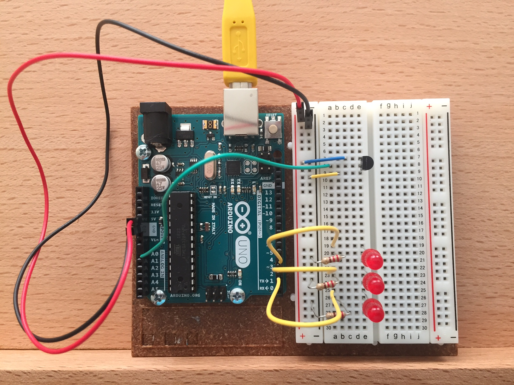
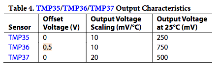
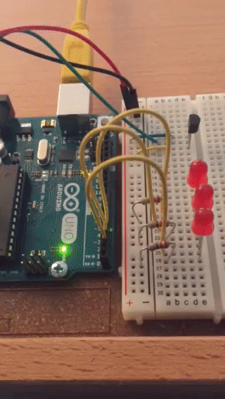

Temperature Sensing with Arduino
Aug 13, 2017 · 609 words · 3 minutes read
I worked through the third basic project in the Arduino Starter Kit Projects Book. I like to write about the projects to reinforce my own understanding.
The third project, the “Love-O-Meter”, creates a simple circuit with a temperature sensor. Using the Analog-to-Digital converter, the Arduino reads in the value coming from the temperature sensor, then lights up a combination of 3 LEDs depending on that value.
Here’s what my circuit looked like:

You can see the temperature sensor in the top right connected to the positive, the analog A0 pin, and the ground. 3 LEDs are each connected to one of the digital ports on the right side of the arduino.
To begin, two constant variables were created for the sensor pin and the baseline temperature. In the setup function, output pins 2, 3, and 4 were put in output mode and were sent low voltage (keeping the LEDs off). The serial port was also initialized to send logging information back to the computer. 9600 refers to sending the computer 9600 bits per second.
const int sensorPin = A0;
const float baselineTemp = 25.0;
void setup() {
Serial.begin(9600);
for (int pinNumber = 2; pinNumber < 5; pinNumber++) {
pinMode(pinNumber, OUTPUT);
digitalWrite(pinNumber, LOW);
}
}
The middle wire of the temperature sensor was connected to the A0 analog in-pin. Inside the main loop, the Arduino receives receives a value between 0-1023 from the sensor through this pin.
const int sensorPin = A0;
int sensorVal = analogRead(sensorPin);
Because the total voltage available to the sensor is 5 volts, the value between 0-1023 can be mapped to a voltage between 0 and 5 volts.
float voltage = (sensorVal / 1024.0) * 5.0;
The voltage output can then be used to convert to temperature. The data sheet for the TMP36 temperature sensor has information about the conversion, and the relevant table is below:

This means that there is a 0.5 V offset for the readings, and 10 mV (or 0.01 V) corresponds to a 1°C change. We can confirm this with the output voltage at 25°C. With an output of 750 mV, we can subtract the offset voltage (0.5 V, or 500 mV), which then gives us 250 mV. Dividing by 10 mV/°C gives us the correct value of 25°C.
We could also do this conversion in volts (instead of millivolts) by subtracting 0.5 V and dividing by 0.01 V/°C, which is the same as multiplying by 100. In other words:
float temperature = (voltage - 0.5) * 100;
We can send these variables to the computer for logging using Serial.print:
Serial.print("Sensor Value: ");
Serial.print(sensorVal);
Serial.print(", Volts: ");
Serial.print(voltage);
Serial.print(", degrees C: ");
Serial.println(temperature);
The function can then turn on a combination of the LEDs based on the difference between the temperature reading and the baseline temperature. By assigning the output voltage to be HIGH, the Arduino sends the high value of voltage (5 V) out of the digital output pin, which then flows through and shines the corresponding LED.
if (temperature < baselineTemp) {
digitalWrite(2, LOW);
digitalWrite(3, LOW);
digitalWrite(4, LOW);
} else if (temperature >= baselineTemp && temperature < baselineTemp + 2) {
digitalWrite(2, HIGH);
digitalWrite(3, LOW);
digitalWrite(4, LOW);
} else if (temperature >= baselineTemp + 2 && temperature < baselineTemp + 4) {
digitalWrite(2, HIGH);
digitalWrite(3, HIGH);
digitalWrite(4, LOW);
} else if (temperature >= baselineTemp + 4) {
digitalWrite(2, HIGH);
digitalWrite(3, HIGH);
digitalWrite(4, HIGH);
}
At the end of the loop, a very slight delay is included to create a pause in between the analog-to-digital readings to ensure that the Analog-to-Digital Converter (ADC) can reset successfully before the next reading.
delay(10);
Finally, the result:

You can see the full code here.